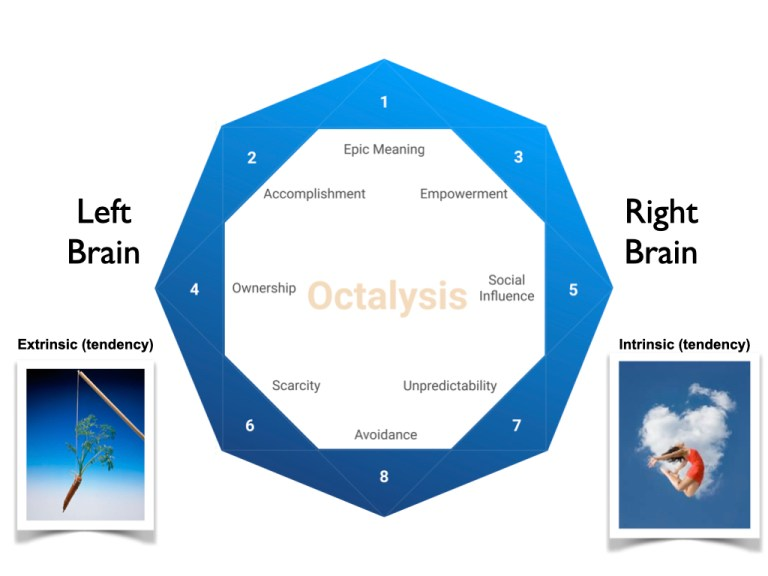
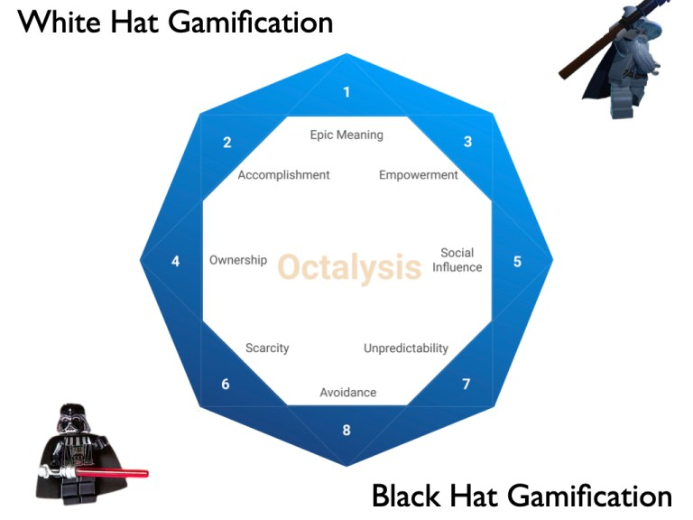

3.9 Features of Octalysis
3.9.1 Left Brain vs Right Brain Core Drives
Within Octalysis, the Core Drives on the right are Right Brain Core Drives, being more related to creativity, self-expression, and social aspects.
The Core Drives on the left are Left Brain Core Drives, being more associated to logic, calculations, and ownership.
Note: the Left Brain/Right Brain Core Drives are not considered true brain science; they are merely symbolic as it makes the framework easier and more effective when designing. It’s useful dividing things up between the logical and the emotional, and I just named them Left Brain/Right Brain Core Drives so people can remember them easily.
Interestingly, Left Brain Core Drives are Extrinsic Motivators – you are motivated because you want to obtain something, whether it be a goal, a good, or anything you cannot obtain; on the other hand, Right Brain Core Drives are Intrinsic Motivators: you don’t need a goal or reward to use your creativity, hangout with friends, or feel the suspense of unpredictability – the activity itself is rewarding on its own.
This is important, because many companies aim to design for motivation based on Extrinsic Motivators, such as giving users a reward at the end. However, many studies have shown that once you stop offering the extrinsic motivator, user motivation will often decrease to much lower than before the extrinsic motivator was first introduced.
It’s much better for companies to design experiences that motivate the Right Brain Core Drives, making something in of itself fun and rewarding, so users continuously engage in the activity.

3.9.2 White Hat vs Black Hat Gamification
Another element to note within Octalysis is that the top Core Drives in the octagon are considered very positive motivators, while the bottom Core Drives are considered negative motivators.
Techniques that utilize the top Core Drives are called “White Hat Gamification,”while techniques that utilize the bottom Core Drives are called “Black Hat Gamification.”
If something is engaging because it lets you express your creativity, makes you feel successful through skill mastery, and gives you a higher sense of meaning, it makes users feel very good and powerful.
On the other hand, if you are always doing something because you don’t know what will happen next, you are constantly in fear of losing something, or because there are things you can’t have, even though you would still be extremely motivated to take the actions, it can often leave a bad taste in your mouth.
The problem with Zynga games, according to the Octalysis framework, is that they have figured out how to do many Black Hat Game Techniques, which drive up revenue numbers from users, but it doesn’t make users feel good. So when a user is finally able to leave the system, they will want to, because they don’t feel like they are in control over themselves, just like gambling addiction.
Keep in mind that just because something is Black Hat doesn’t mean it is necessarily bad – these are just motivators – and they can be used for productive and healthy results or malice and manipulative ones. Many people voluntarily submit themselves into Black Hat Gamification in order to go to the gym more often, eat healthy, or avoid hitting the snooze button every morning.
A good Gamification expert will consider all 8 Core Drives on a positive and productive activity so that everyone ends up happier and healthier.

3.9.3 Octalysis Score
Keep in mind that a good gamified system doesn’t need to have all of the Core Drives, but it does need to do really well with the ones it does implement. Some extremely successful products do very, very well with Social Influence, while others just utilize Scarcity.
In order to come up with an Octalysis score, you take how good the subject of analysis is in each core drive, assign a number between 0-10 based on personal judgement, data, and experience flows, and then square that number to get the Core Drive Score. Once you add up all 8 Core Drive Scores, you will get your final Octalysis Score.
Of course, the Score itself is not very useful or actionable, so I always tell my clients to focus on what Core Drive is lacking, instead of being obsessed with their “score.”